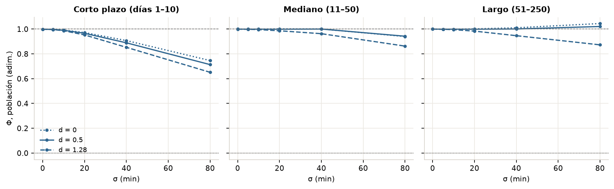
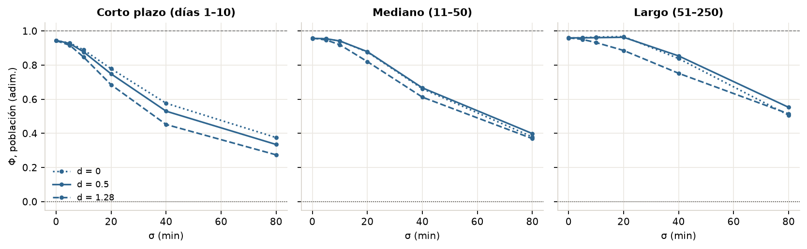
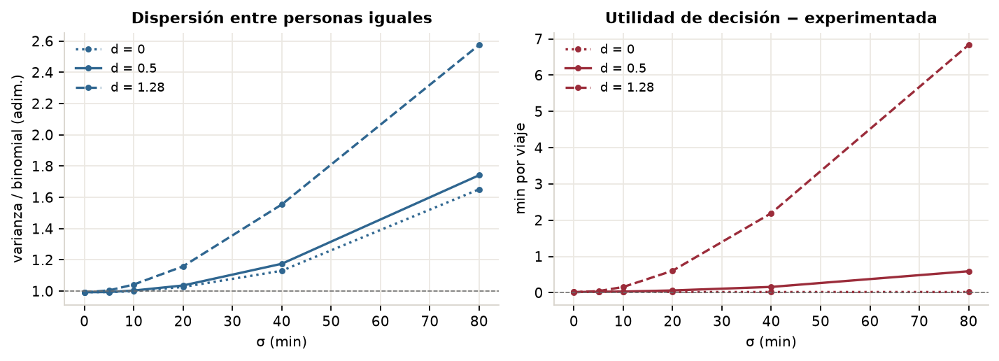
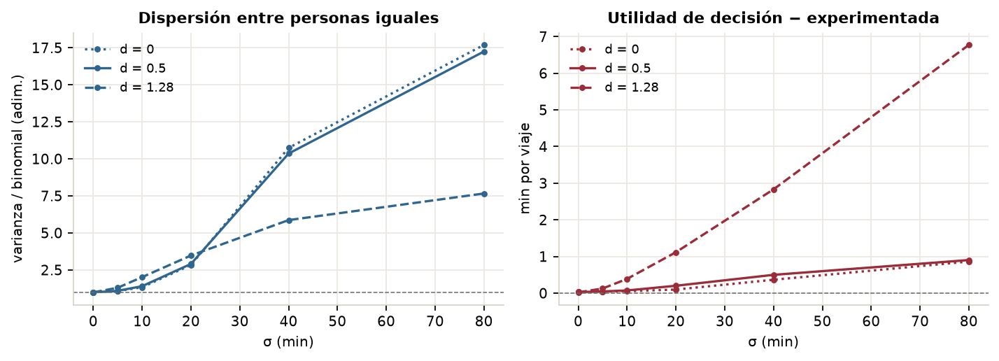

Qué queda del efecto de la variabilidad cuando aprenden todos a la vez y la congestión responde — y por qué la partición modal no lo muestra.
E1 y E2 miran a una persona, con la red congelada. E3 pregunta qué queda de eso cuando aprende la ciudad entera y la congestión responde: 36.000 agentes eligiendo el mismo día, cargando la red, y el tiempo de cada uno dependiendo de lo que eligieron los demás. Cinco preguntas, con la respuesta corta al lado; los números son los del simulador y la §4 dice qué tan lejos podrían estar.
P1. ¿La ciudad reproduce lo que le pasa a una persona? Sí, y amortiguado. Con = 80 min y = 1,28, a largo plazo cae de 1,000 sin ruido a 0,873. El mecanismo es el mismo de E2; lo que cambia es que acá nadie está solo.
P2. ¿La variabilidad mueve la partición modal? Prácticamente nada: la cuota de auto pasa de 59,34 % sin ruido a 59,15 % con = 80 min. Es la pregunta cuya respuesta más se aleja de la intuición de E2 — y la §6.1 explica por qué el agregado no es la variable que hay que mirar.
P3. ¿Cuánto de la conducta final es historia y no preferencias? Bastante. Personas idénticas —mismo estrato, misma celda, misma tenencia de auto— terminan 2,58 veces más dispersas que lo que explicaría el azar de elegir con la misma probabilidad. En cambio la suerte del estreno no deja huella medible: quienes empezaron mal terminan en 58,6 % de auto y quienes empezaron bien en 58,9 %.
P4. ¿Cuánto cuesta, y cuánto de ese costo se percibe? Acá aparece lo que E1 y E2 no pueden ver, porque necesita separar la utilidad con la que se decide de la que se vive. Con = 80 min la gente cree estar 6,8 minutos por viaje mejor de lo que está, y el error no se corrige con los días. Es además el único indicador de este informe que no depende de la calibración (§6.3).
P5. ¿Cuánto de esto depende de la calibración? La dependencia de trayectoria, mucho. Con los de la literatura (§4) la dispersión entre iguales pasa de 2,58 a 7,66 veces la binomial, y la brecha de estreno —que acá es nula— se vuelve +14,6. El mecanismo no cambia; el margen para que se note, sí.
La diferencia con E1 y E2 cabe en una frase: acá la red responde. Cada día los 36.000 agentes eligen con sus tiempos percibidos, los flujos cargan la oferta (BPR del auto, frecuencia del metro), y cada uno experimenta el tiempo real de su modo en su celda más un propio. Al día siguiente decide con el IBL sobre lo que vivió. Son 250 días.
Eso agrega dos cosas que en fase 0 no existían:
El diseño cruza 6 niveles de ruido — ∈ {0, 5, 10, 20, 40, 80} min, sobre el auto y sobre el metro— y 3 de memoria — ∈ {0,00, 0,50, 1,28}—, en las dos escalas del logit de la §4. = 0 es la referencia de cada escala: la misma dinámica sin ruido, que converge al equilibrio del logit.
Tabla 1La ciudad del día 0
| modo | cuota de equilibrio (%) |
|---|---|
| Auto | 59,32 |
| Metro | 40,68 |
El día 0 es el equilibrio MSA de esta ciudad: 36.000 agentes con su celda y su estrato, los tiempos de equilibrio por celda y la partición de arriba. Esos tiempos son la «información exógena de buena calidad» con la que todos arrancan: el prior de la ec. (2). Sólo Auto y Metro, y todos con auto, para que cada persona elija entre los dos modos que tienen ruido — si hubiera modos sin ruido serían un refugio y parte del efecto sería ese artefacto.
El instance-based learning es el mismo de E1 y E2: el tiempo que la persona cree que toma el modo es el promedio ponderado de los tiempos que vivió en ese modo, con los días recientes pesando más y los días en que no lo eligió sin entrar.
La novedad de E3 está en : ya no es un tiempo fijo con ruido, sino
el tiempo que la red entregó ese día en la celda de esa persona, más su
propio. Si mucha gente se pasa al auto, el auto se congestiona y
todos lo viven peor. El prior es el tiempo de equilibrio del día 0
(ibl.py:48).
La utilidad no se reimplementa: se llama al núcleo una vez por grupo con los tiempos del día 0 y se corrige sólo la parte lineal en el tiempo de viaje,
de modo que las constantes modales, el costo, las penalizaciones y la factibilidad quedan exactamente como las calcula el simulador. La elección es un logit sobre los modos factibles de esa persona:
es la escala del logit, y la §4 explica por qué acá sí importa cuál se
usa (poblacion.py:183).
Cuánta ventaja sobrevive. Igual que en E2, pero el punto de indiferencia ya no es ½ sino el reparto uniforme entre los modos factibles de cada persona:
donde es la cuota media del modo que de verdad es mejor para cada
persona y la que elegiría quien conoce los tiempos de equilibrio.
Se calcula en total y por banda de ventaja del mejor
sobre el segundo (poblacion.py:262). Esas bandas están en útiles del
núcleo y no cambian con la escala, así que separan exactamente a la
misma gente en las dos corridas — algo que en E1 y E2 no se podía, porque ahí la
saturación obligó a elegir un caso de referencia a mano.
Cuánto separó la historia a personas iguales. Dos personas con el mismo estrato, la misma celda y la misma tenencia de auto tienen el mismo modo mejor y la misma de equilibrio. Si eligieran con esa misma probabilidad, la varianza de su cuota en los últimos 20 días sería la binomial. La razón
vale 1 si la historia no diferenció a nadie y crece cuando sí
(poblacion.py:240). Es el indicador de dependencia de la
trayectoria, y no tiene análogo en E1 ni E2.
Cuánto pesó el primer día. Entre quienes estrenaron el modo con una
experiencia del decil peor y quienes la tuvieron del decil mejor, la
cuota final de cada grupo (poblacion.py:195). Si la suerte inicial no
importa, los dos números coinciden.
Cuánto cuesta y cuánto se percibe. Dos bienestares distintos: la utilidad con la que se decidió —la percibida, del modo elegido— y la que de verdad se vivió, con el tiempo que la red entregó. Su diferencia, en minutos,
es cuánto mejor cree estar la gente de lo que está. Los dos se miden en útiles del núcleo — entra sólo en la ec. (3), no multiplica —, así que es comparable entre escalas y se lee en minutos de viaje con el mismo = −0,0331 útiles/min.
Todo lo que sigue está calculado con los del simulador. Esta sección explica qué son, por qué la literatura de elección repetida sugiere valores bastante mayores, y por qué eso se reporta como sensibilidad y no como corrección.
En un logit sólo se identifica el producto : multiplicar la escala
por un número y dividir los coeficientes por el mismo deja exactamente las
mismas probabilidades. Por eso el logit de transporte del simulador fija
= 1 —titirilquen_core/demand/choice.py:19
calcula a secas, sin ninguna escala— y son los los que la
absorben.
La consecuencia importa: no es una perilla disponible, ya está consumida. Los valen lo que valen porque, con = 1, reproducen una partición modal observada. (El del uso de suelo es otra cosa: ahí sí es un parámetro de escenario, porque fija cuánto pesa el ruido de localizarse frente a una accesibilidad que ya trae su propia escala.)
Guevara, Tang y Gao (2018) estiman un IBL con los datos de laboratorio de ruta de Ben-Elia y Shiftan (2010) —que es casi exactamente el experimento que estos informes simulan— y obtienen:
Tabla 2Guevara, Tang y Gao (2018), tabla 4, dataset completo
| parámetro | d | TIMEF | TIMES | LRISK | FRISKY | CWA |
|---|---|---|---|---|---|---|
| estimación | 1,28 | −0,198 | −0,086 | 0,864 | 0,405 | 5,71 |
| error estándar | 0,137 | 0,015 | 0,013 | 0,144 | 0,12 | 0,192 |
TIMEF multiplica el tiempo percibido de la ruta rápida (su ec. 15), no el real: es el análogo exacto de nuestro tiempo del IBL. TIMES es el de la ruta lenta — son dos coeficientes específicos de alternativa dentro del mismo modelo, no un rango. De acá sale también el d = 1,28 que usamos de referencia, que el paper subraya como estimado y no fijado.
Su coeficiente de tiempo es −0,198 útiles/min contra los −0,0331 del simulador:
Tomar ese número no es «elegir otra escala». Como ya está normalizado, equivale a afirmar que los de transporte del simulador son seis veces chicos — es decir, que la elección modal del modelo es mucho más ruidosa de lo que sería en la realidad. Y eso contradice su calibración, que es lo que fija esos .
Hay además una razón de fondo: la escala del logit no es transferible entre contextos de elección. El dato de Guevara viene de elegir entre dos rutas que difieren sólo en tiempo, en laboratorio, con información en pantalla. Elegir entre auto, metro, bici y caminata en una ciudad real es una decisión con mucha más heterogeneidad no observada — y esa heterogeneidad es precisamente lo que un chico representa. Su valor no es «el verdadero» que el simulador debería copiar.
Por eso los resultados van con los del simulador y las tablas traen una columna « × 6,0» como sensibilidad de calibración: dice cuánto crecería cada efecto si la elección modal fuera tan determinista como sugiere el laboratorio. Cuando un efecto se vea chico, esa columna contesta la pregunta obligada — ¿chico de verdad, o chico porque el modelo elige con demasiado ruido?
En los experimentos de una persona la red está congelada y subir la escala sólo afila la elección. Acá no: el día 0 es el equilibrio que calcula el MSA del núcleo con = 1, y con los multiplicados ese reparto deja de ser un punto fijo. La ciudad se corre sola, sin ningún ruido.
Tabla 3El día 0 deja de ser equilibrio — cuota (%) sin nada de ruido
| modo | día 0 (MSA, μ = 1) | control (simulador) | control (β × 6,0) |
|---|---|---|---|
| Auto | 59,32 | 59,34 | 60,97 |
| Metro | 40,68 | 40,66 | 39,03 |
Las tres columnas son la misma ciudad, sin ningún ruido. Con μ = 1 la dinámica se queda donde el MSA la dejó —es el control de que todo está bien conectado—. Con los β de la literatura el auto se corre 1,65 puntos: el logit más afilado concentra la demanda y la congestión acomoda el resto. Por eso Φ del control vale 0,960 y no 1.
Es la forma más directa de ver lo de la §4.1: los estaban calibrados para reproducir esa partición, así que multiplicarlos la rompe. De ahí dos reglas de lectura: la línea base es el control sin ruido de cada columna, y los no se comparan entre columnas en valor absoluto —lo comparable es cuánto cae cada uno al subir .
Tabla 4Φ de la población, d = 1,28
| σ (min) | días 1–10 | días 11–50 | días 51–250 | |||
|---|---|---|---|---|---|---|
| simulador | β × 6,0 | simulador | β × 6,0 | simulador | β × 6,0 | |
| 0 | 0,999 | 0,943 | 1,000 | 0,958 | 1,000 | 0,960 |
| 5 | 0,996 | 0,916 | 0,999 | 0,947 | 0,999 | 0,951 |
| 10 | 0,987 | 0,847 | 0,996 | 0,919 | 0,995 | 0,932 |
| 20 | 0,953 | 0,685 | 0,986 | 0,821 | 0,984 | 0,886 |
| 40 | 0,853 | 0,452 | 0,963 | 0,612 | 0,947 | 0,752 |
| 80 | 0,651 | 0,274 | 0,863 | 0,369 | 0,873 | 0,515 |
Fracción de la ventaja verdadera que sobrevive, ec. (4), en los tres horizontes. Con σ = 0 debe dar 1 en las dos escalas y da: es el control de que la dinámica sin ruido converge al equilibrio del logit de esa escala.


Tabla 5Φ a largo plazo por banda de ventaja, d = 1,28
| ΔV (útiles) | personas | P* | σ = 0 | σ = 20 | σ = 40 | σ = 80 | |||||
|---|---|---|---|---|---|---|---|---|---|---|---|
| simulador | β × 6,0 | simulador | β × 6,0 | simulador | β × 6,0 | simulador | β × 6,0 | simulador | β × 6,0 | ||
| 0,0–0,1 | 3.924 | 0,512 | 0,568 | 1,000 | 0,812 | 0,982 | 0,655 | 0,910 | 0,575 | 0,823 | 0,327 |
| 0,1–0,3 | 8.502 | 0,549 | 0,757 | 1,000 | 0,892 | 0,981 | 0,763 | 0,943 | 0,576 | 0,869 | 0,346 |
| 0,3–0,6 | 9.564 | 0,608 | 0,926 | 1,000 | 0,971 | 0,981 | 0,886 | 0,940 | 0,724 | 0,863 | 0,462 |
| 0,6–∞ | 7.994 | 0,696 | 0,990 | 1,000 | 0,996 | 0,986 | 0,970 | 0,953 | 0,892 | 0,882 | 0,677 |
La columna σ = 0 es el control sin ruido: el impacto del ruido es la caída respecto de ella, no el nivel. ΔV es la ventaja del modo mejor sobre el segundo, en útiles del núcleo. Las bandas parten a la misma gente en las dos escalas —ΔV se calcula sobre la utilidad del simulador y μ entra sólo en la ec. (3)—, así que las columnas son directamente comparables. Lo que sí cambia con la escala es P*: la misma ventaja en útiles se traduce en una elección mucho más decidida.
Tabla 6La partición modal, d = 1,28, últimos 20 días
| σ (min) | cuota de auto (%) | abandono del auto (%) | abandono del metro (%) | |||
|---|---|---|---|---|---|---|
| simulador | β × 6,0 | simulador | β × 6,0 | simulador | β × 6,0 | |
| 0 | 59,34 | 60,97 | 0,02 | 13,35 | 0,02 | 13,12 |
| 5 | 59,33 | 60,94 | 0,02 | 13,54 | 0,02 | 13,68 |
| 10 | 59,31 | 60,88 | 0,03 | 13,92 | 0,02 | 14,83 |
| 20 | 59,29 | 60,76 | 0,03 | 14,31 | 0,02 | 16,49 |
| 40 | 59,26 | 60,53 | 0,06 | 13,62 | 0,04 | 17,22 |
| 80 | 59,15 | 59,99 | 0,26 | 11,21 | 0,25 | 14,92 |
«Abandono» es la fracción de quienes podían usar el modo y terminaron sin usarlo ningún día de la ventana. Léase contra la fila σ = 0: con los β de la literatura el abandono ya parte de 13,4 % sin nada de ruido —el logit afilado hace que mucha gente no toque nunca uno de los dos modos, §4.1—, así que el nivel no es efecto del ruido y la diferencia sí. La cuota de auto se mueve −1,0 entre σ = 0 y σ = 80 a la sensibilidad de calibración, y −0,2 a la vieja. Contrastar con la tabla 4: las elecciones individuales se degradan mucho más que el agregado (§6.1).
Tabla 7Cuánto separó la historia a personas idénticas, d = 1,28
| σ (min) | dispersión entre iguales, R | μ = 1: cuota final de auto (%) | μ = 5,98: cuota final de auto (%) | |||
|---|---|---|---|---|---|---|
| simulador | β × 6,0 | mala suerte | buena suerte | mala suerte | buena suerte | |
| 0 | 0,99 | 0,99 | 59,3 | 59,3 | 63,0 | 63,0 |
| 5 | 1,00 | 1,30 | 59,2 | 58,9 | 62,4 | 63,2 |
| 10 | 1,04 | 2,01 | 59,2 | 58,9 | 62,2 | 62,9 |
| 20 | 1,16 | 3,47 | 59,1 | 58,7 | 60,5 | 62,2 |
| 40 | 1,55 | 5,86 | 59,3 | 58,7 | 55,3 | 62,6 |
| 80 | 2,58 | 7,66 | 58,6 | 58,9 | 49,0 | 63,6 |
R es la ec. (5): 1 significa que personas iguales se comportan como si tiraran la misma moneda, y más de 1 que la historia las diferenció. «Mala» y «buena suerte» son quienes estrenaron el modo con una experiencia del decil peor y del mejor. Con los β de la literatura esa brecha de estreno vale +14,6 con σ = 80; con los β del simulador, +0,3.


Tabla 8El costo y lo que se percibe de él, d = 1,28, últimos 20 días
| σ (min) | B: se cree mejor por (min/viaje) | utilidad experimentada (útiles) | ||
|---|---|---|---|---|
| simulador | β × 6,0 | simulador | β × 6,0 | |
| 0 | 0,01 | 0,02 | −1,0919 | −1,0245 |
| 5 | 0,04 | 0,13 | −1,0917 | −1,0247 |
| 10 | 0,16 | 0,39 | −1,0916 | −1,0248 |
| 20 | 0,60 | 1,12 | −1,0918 | −1,0267 |
| 40 | 2,19 | 2,83 | −1,0933 | −1,0360 |
| 80 | 6,83 | 6,77 | −1,0959 | −1,0591 |
B es la ec. (6): cuánto mejor cree estar la gente de lo que está, en minutos de viaje. Con σ = 80 min son 6,8 min por viaje con los β de la literatura y 6,8 a los del simulador. Los dos bienestares están en útiles del núcleo, así que las columnas son comparables entre escalas. La utilidad experimentada cae mucho menos que lo que la brecha sugiere: el grueso del efecto es error de percepción, no pérdida de tiempo.
Es el contraste más útil de E3. Las elecciones individuales se degradan — cae de 1,00 a 0,87— y sin embargo la cuota de auto se mueve −0,2. Un observador que sólo mirara la partición modal concluiría que no pasó nada.
Hay dos razones y conviene no confundirlas. La primera es compensación: el ruido está en los dos modos, así que tanta gente abandona el auto como el metro, y los errores se cancelan en la suma. La segunda es congestión: si demasiados se pasan al auto, el auto empeora y los devuelve. El equilibrio agregado es estable aunque abajo las personas estén rotando sin parar.
La consecuencia práctica es incómoda para la evaluación de proyectos. La partición modal es la variable que casi siempre se reporta, y acá es justamente la que menos informa: el daño está en quién va en cada modo, no en cuántos.
Con = 80 min, personas con el mismo estrato, la misma celda y la misma tenencia de auto terminan 2,6 veces más dispersas que si todas eligieran con la misma probabilidad. No es heterogeneidad de preferencias: por construcción son idénticas. Es historia.
Lo que no aparece con estos es que la suerte del estreno deje huella: la diferencia entre empezar con una mala experiencia y empezar con una buena vale +0,3 de cuota final, que es ruido. La dispersión viene de toda la trayectoria, no del primer día.
La ec. (6) separa dos cosas que normalmente se miden juntas: lo que la persona vive y lo que cree estar viviendo cuando decide. Con = 80 min la gente se cree 6,8 minutos por viaje mejor de lo que está, y ese error no se corrige con los días.
Y tiene una propiedad que lo separa de todo lo demás de este informe: es casi el mismo con los de la literatura (6,8 contra 6,8 min). No es casualidad: los dos bienestares se miden en útiles del núcleo, así que la escala cambia a quién le toca equivocarse, no cuánto se equivoca quien se equivoca. Mientras , y la brecha de estreno dependen fuerte de la calibración, el error de percepción por viaje no. Es el resultado más robusto de E3.
El mecanismo vuelve a ser la ec. (1): como sólo se observa el modo elegido, y se elige lo que parece bueno, la creencia sobre el modo usado está sesgada hacia lo favorable. La persona no tiene manera de descubrir su error, porque el experimento que lo revelaría —usar el otro modo— es justamente el que dejó de hacer.
Esto importa para medir beneficios. Si se evalúa con la utilidad de decisión —que es lo que una encuesta de preferencias declaradas recoge— se sobreestima el bienestar en del orden de 7 minutos por viaje. La utilidad experimentada, en cambio, cae poco: el grueso del daño es de percepción, no de tiempo perdido.
Mucho, salvo . Con los de la literatura (§4) cae de 0,96 a 0,51 en vez de hasta 0,87; la dispersión entre iguales llega a 7,7 veces la binomial; y la brecha de estreno, que acá es nula, pasa a valer +14,6.
O sea: la dependencia de trayectoria es el indicador más sensible a la calibración de todo este trabajo. Si el del simulador está absorbiendo heterogeneidad no observada, lo que E3 reporta como «la historia diferencia un poco» podría ser bastante más.
Con los del simulador; el punto 5 dice qué cambia si fueran los de la literatura.
papers/2018 Guevara Tang Gao TRB.pdf: la tabla 2 es su tabla 4,
dataset completo.cd sandbox/ibl-dia-a-dia
uv sync --extra dev --reinstall-package titirilquen-core # el núcleo del repo, no uno cacheado
uv run python poblacion.py # → salida/poblacion.json
uv run python poblacion.py --guevara # → salida/poblacion-guevara.json
uv run python figuras_experimentos.py
uv run python figuras_experimentos.py --guevara
uv run python informe_e3.py
node ../../tools/renderiza_ecuaciones.js